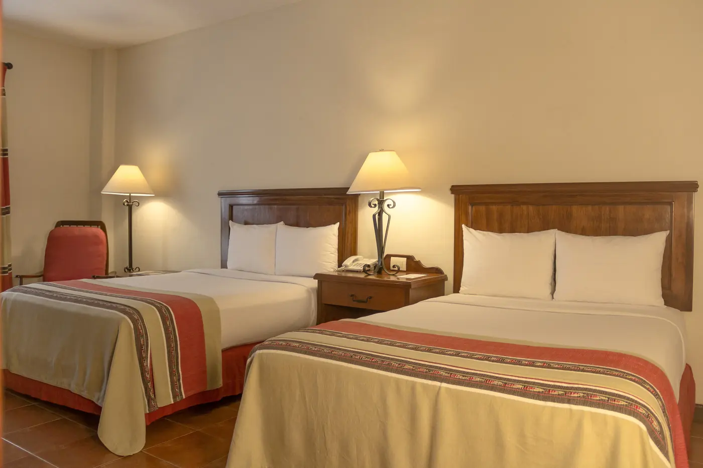
Habitación Estándar
Dos camas matrimoniales, pensada para familias. Veinte habitaciones de este tipo.
- 2 adultos + 2 menores de 12
- Wi-Fi
- Aire acondicionado
Santiago, Nuevo León · Pueblo Mágico
Hotel, restaurante, spa y eventos frente a la plaza principal. Cincuenta años de sabor y tradición.
50 aniversario · Sabor y tradición
Frente a la plaza principal de Villa de Santiago, Las Palomas reúne hotel, cocina regional, spa y salones para celebrar. Muros color crema, puertas azul añil, bugambilias en los balcones y la Parroquia de Santiago Apóstol a unos pasos.
Un destino · Cuatro experiencias
01 · Hotel
Veinticinco habitaciones decoradas en estilo norestense, alrededor de un patio con fuente y balcones llenos de bugambilias. Desde la terraza se ven las torres de la Parroquia y la sierra.

Dos camas matrimoniales, pensada para familias. Veinte habitaciones de este tipo.
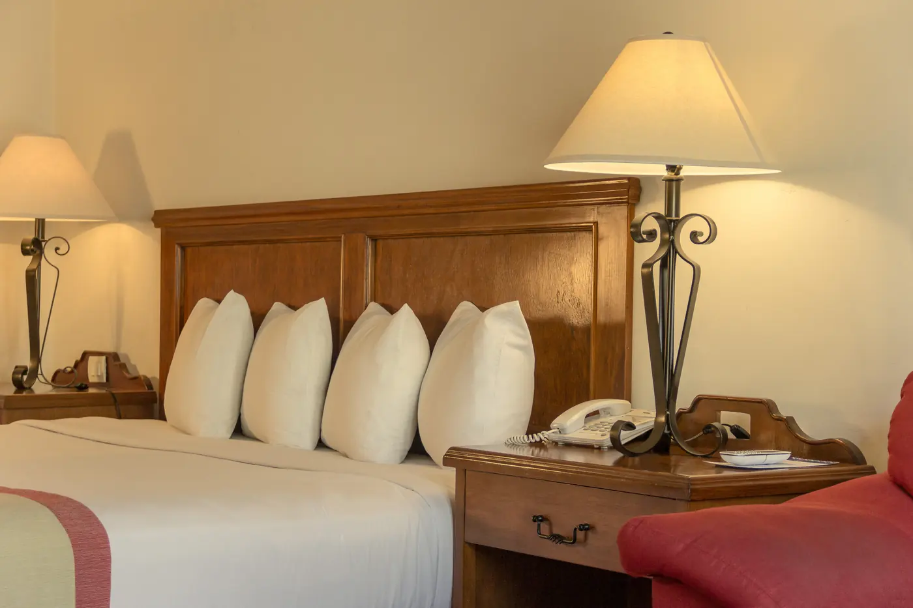
Una cama king size para dos personas. Cinco suites en el hotel.
Elevador, room service en horario del restaurante, valet parking los sábados y domingos y una chimenea azul en el lobby.
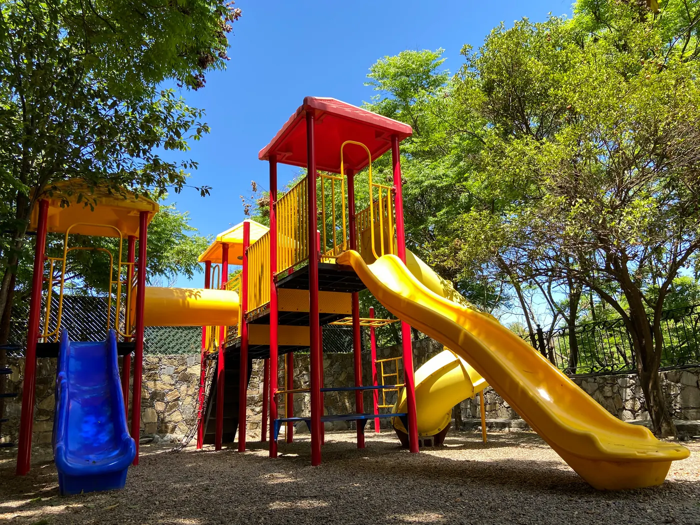
Para los pequeños
Resbaladillas y columpios a la sombra de los árboles, y talleres en fechas especiales, como la decoración de galletas del Día del Niño.
Desde el aire
Terrazas, faroles y la plaza iluminada al caer la tarde.
02 · Restaurante
Sabores, aromas y texturas de la gastronomía típica del noreste. Cada ingrediente se elige con cuidado, con la tradición de la auténtica comida regional.
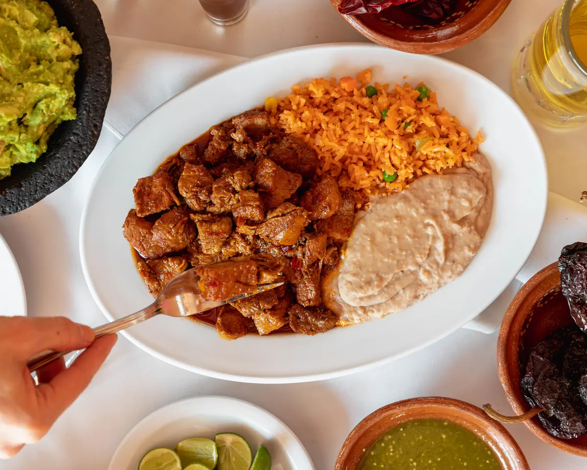
EmblemáticoCon arroz, frijoles y tortillas recién hechas.
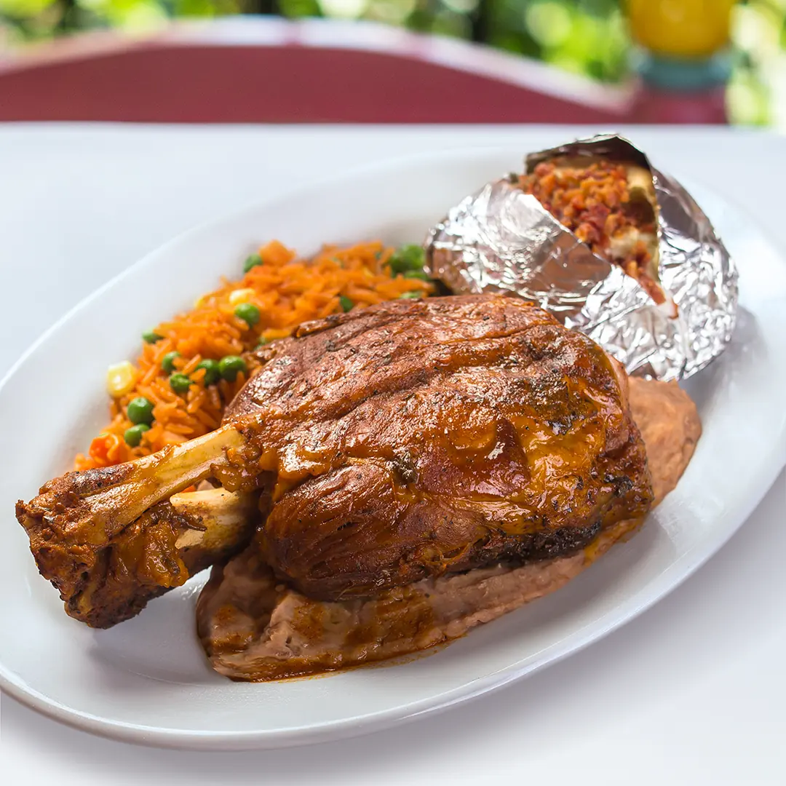
EmblemáticoDorado al horno, servido con arroz y papa.
Nogada de nuez y granada fresca sobre talavera.
Muros de piedra, arcos azul añil, sillas de colores y una cocina que abre todos los días.
De la carta de la casa: envueltos, botanas, cortes y parrilladas para compartir.
Pan de elote, flan con cajeta y nuez, arroz con leche, brownie con nuez y la gordita palomas.
03 · Desayunos
Desde las 8 de la mañana, todos los días. Café de olla, jugos naturales, pan dulce del día y los clásicos del norte.
Bar y cava
Coctelería de autor, mezcal y los vinos Las Palomas del Valle de Bernal.
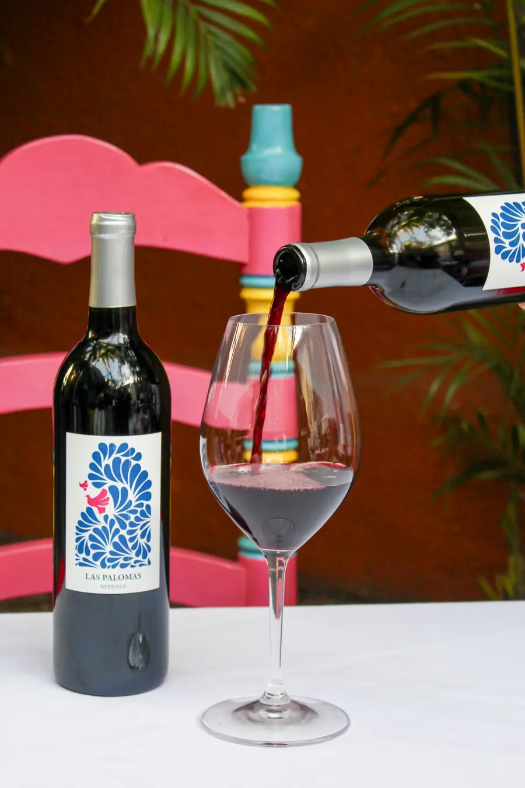
Vino de la casa
Dos vinos tintos con etiqueta de talavera, hechos en el Valle de Bernal, para acompañar la cocina regional.
Grenache, Tempranillo, Nebbiolo y Ruby Red.
Por copa o botellaNebbiolo de un solo varietal.
Por copa o botella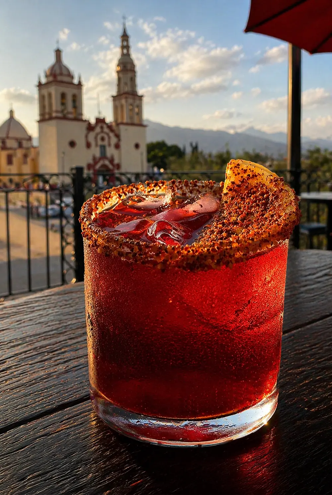
Mezcal 28 en la carta de mezcales, también en cocteles servidos en la terraza frente a la Parroquia.
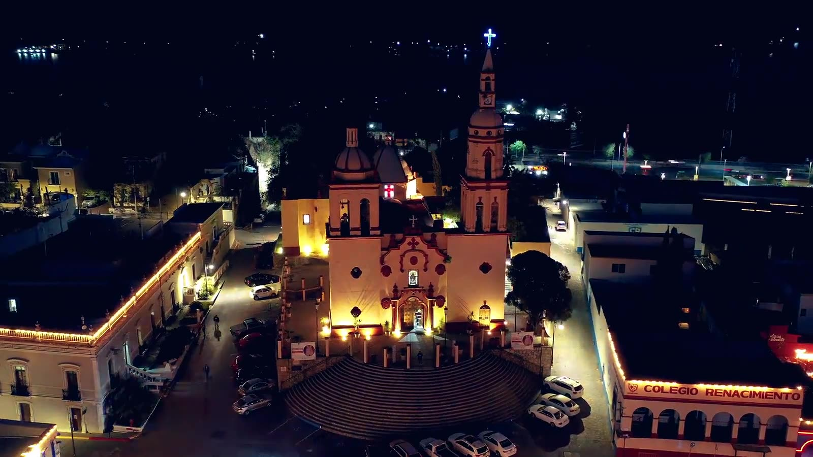
04 · Pueblo Mágico
Calles empedradas, la Parroquia de Santiago Apóstol, artesanías y tradiciones que se viven todo el año, del Día de Muertos a las posadas.
ABASOLO 101 · SANTIAGO, NUEVO LEÓN
05 · Spa y jardín
Déjate consentir por nuestras terapeutas con un masaje con piedras calientes, un facial o el tratamiento que necesites. Después, el jardín y la alberca.
06 · Eventos
Un lugar único para celebrar, con la calidez de un pueblo mágico y un equipo que opera cada detalle.
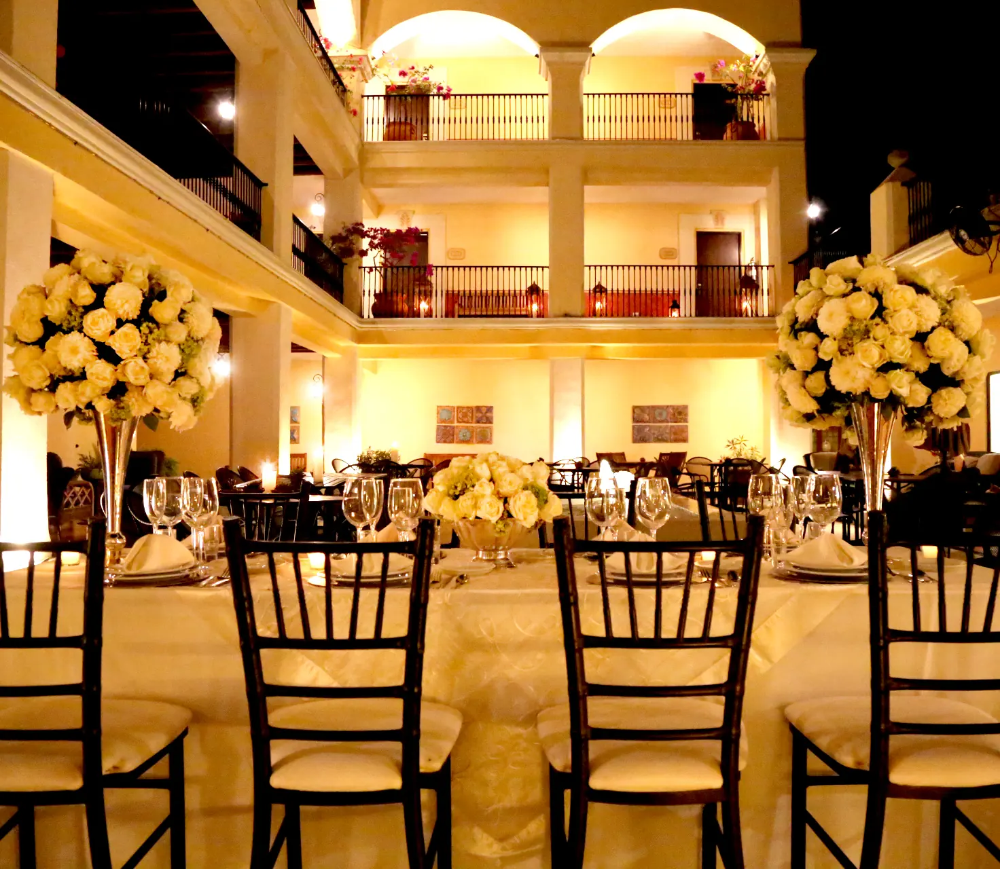
Eventos sociales y corporativos, operados por un profesional en organización de eventos, con la garantía de un evento de primer nivel.
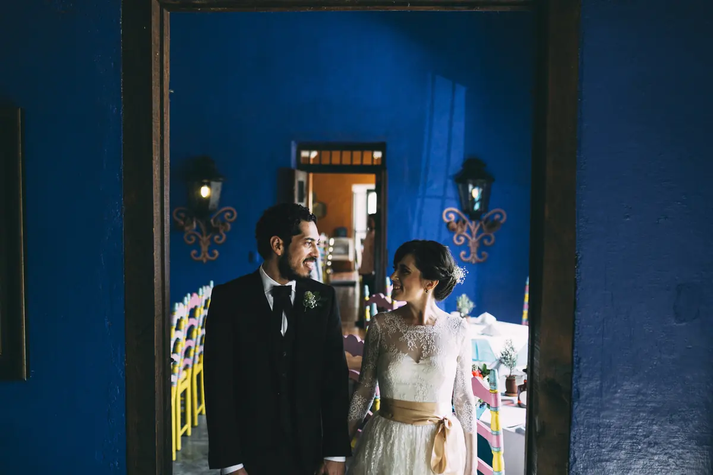
Ceremonia, banquete en el patio y hospedaje para la familia.
Paquetes con cena y habitación, o solo la ambientación.
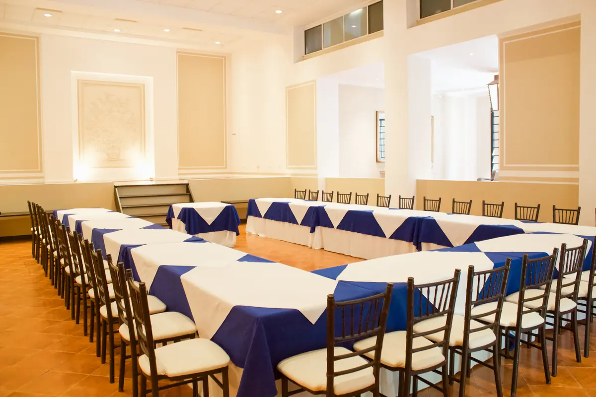
Juntas, capacitaciones y comidas de trabajo en salón.
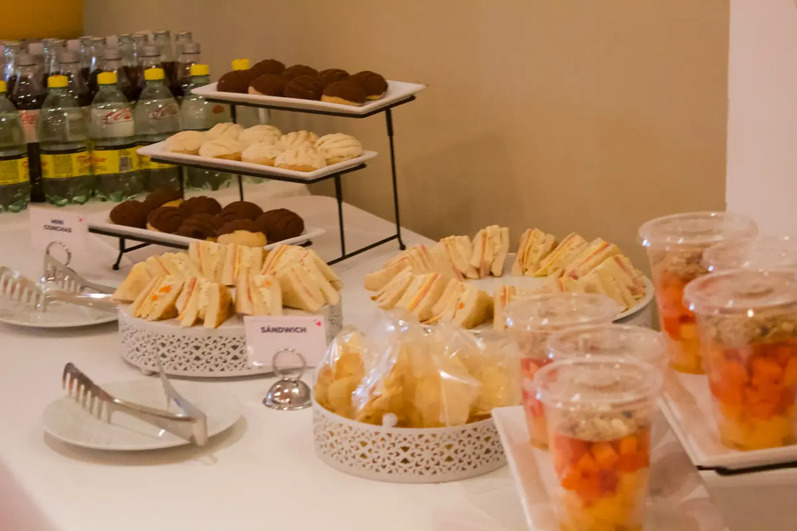
Café, jugos y bocadillos para tus sesiones.
Rodeado de arcos y balcones, iluminado con velas.
Frente a las torres de la Parroquia de Santiago Apóstol.
Para eventos sociales y corporativos de cualquier tipo.
Mesas de dulces y recepciones al aire libre.
Tiempos servidos en loza de talavera azul. Ejemplos de nuestros montajes.
Escríbenos por WhatsApp con fecha, tipo de evento y número de invitados.
Patio, terraza, salón o jardín, con el menú de banquete que prefieras.
Un profesional en eventos coordina montaje, cocina y meseros.
Hospedaje en el hotel, a unos pasos de la plaza principal.
07 · Tradiciones
Desde nuestras terrazas se ven las celebraciones del pueblo. Cada temporada llega con su menú, su decoración y su música.
Mesas para dos frente a la Parroquia iluminada, con música en vivo. También hay paquetes románticos con cena y habitación.
La noche del Grito se vive desde nuestras terrazas, con mariachi y el chile en nogada de temporada.
Catrinas monumentales en la plaza, ofrenda con cempasúchil en el hotel y pan de muerto de nuestra cocina.
El árbol de la plaza encendido frente al hotel, posadas y chocolate caliente para las noches frías.
Diciembre en Santiago
Reserva con tiempo: para fines de semana recomendamos de 3 a 4 semanas de anticipación.
08 · Boutique de artesanías
Talavera, barro, muñecas de trapo, papel picado y piezas de artesanos mexicanos, dentro del hotel.
En movimiento
09 · Antes de llegar
El check-in es a partir de las 3:00 pm y el check-out a las 12:00 del mediodía.
La tarifa de jueves a sábado incluye dos cupones de desayuno a la carta: huevos, machacado, menudo o tamales, con café americano de refill.
La habitación Estándar tiene dos camas matrimoniales para dos adultos y hasta dos menores de 12 años. La Junior Suite tiene una cama king size para dos personas.
De 10:00 am a 8:00 pm, todos los días.
No. Las mesas se asignan por orden de llegada. Abrimos de domingo a miércoles de 8:00 am a 10:00 pm y de jueves a sábado de 8:00 am a 11:00 pm. El room service tiene el mismo horario.
Sí. El valet parking funciona sábados y domingos.
No se permiten mascotas en las habitaciones.
Para viernes o sábado recomendamos reservar con 3 a 4 semanas de anticipación. Las fechas se pueden cambiar con al menos 10 días de aviso, sujeto a disponibilidad.
Tarjeta de débito o crédito, transferencia o depósito bancario. Al hacer check-in se deja una tarjeta en garantía.
Sí: paquetes con cena y habitación, o solo la ambientación de la habitación.
Tu experiencia